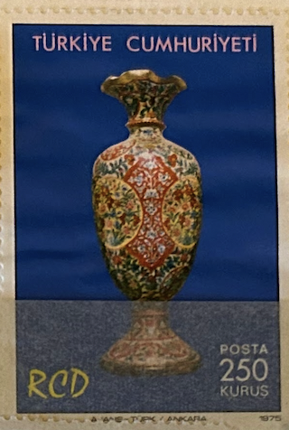
| SOURCE | TITLE| IMAGE MATCH | click to source page |
| TouchStamps | Stamp: 11th Anniversary of RCD (Turkey 1975) - TouchStamps | 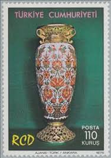 |
| Shutterstock | 11,901 Postage Stamp Museum Royalty-Free Images, Stock Photos & Pictures | Shutterstock | 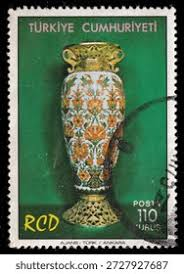 |
| LiveAuctioneers | Chinese Vases & Vessels for Sale at Auction | 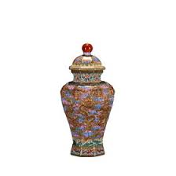 |
| Bonhams | Bonhams : A pair of gilt-bronze and champlevé-enamelled quatrelobed vases Qianlong | 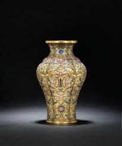 |
| eBay | Vintage Chinese Satsuma Moriage Floral Gold Gilded Ceramic Flower Vase 12" Tall | eBay | 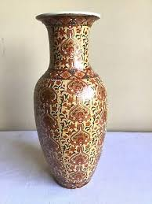 |
| 1stDibs | 19th Century Moser Gilt and enameled Ruby Red Glass Pitcher and Wine Glass Set at 1stDibs | 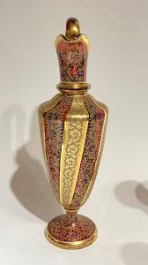 |
| meltbuy | Vase camel skin lamp white beige red art – MELTBUY | 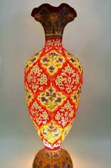 |
| Invaluable.com | Sold at Auction: MORIAGE SATSUMA ANTIQUE ASIAN JAPANESE ENAMELED VASE | 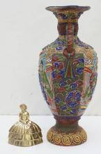 |
| Alibaba.com | Traditional Indian Metal Vase - Cast Brass with Painted Chicken Work | 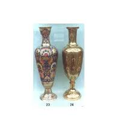 |
| Chairish | Antique 1920s Satsuma Moriage Earthenware Vase | Chairish | 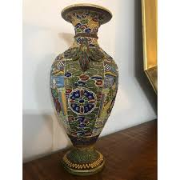 |
| eBay | CHINESE ANTIQUE EXTRAORDINARY ONE OF A KIND VASE | eBay | 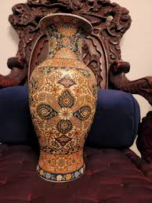 |
| msidiqsons.com | Vases – msidiqsons.com | 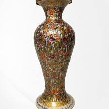 |
| STAIR Galleries | Two North African Silver Metal-Mounted Coral, Leather and Glazed Earthenware Vases and Covers sold at auction on 5th December | STAIR | 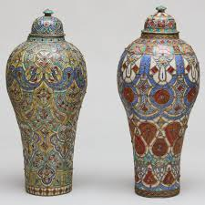 |
| printzonebd.com | 1880 Morgan Silver Dollar. | 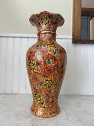 |
| Etsy | Japanese Satsuma Style Lidded Pottery Temple Urn Gilded Handles Romantic & Floral Decor Vase 20c China - Etsy | 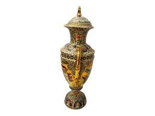 |
| valuarts.com | Vintage Gold Cloisonne Flower Vase with Wood Stand | 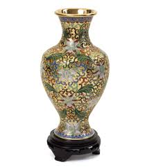 |
| Antiques | Pair Of Tall Antique Satsuma Vases, Japanese, Ceramic, Decorative, Moriage, 1900 | 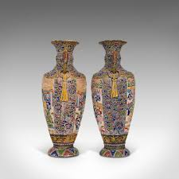 |
| Lambs Ears and Honey | Cappadocia, Turkey - Fairy Chimneys & a Unique History - Lambs Ears and Honey | A Food & Travel Blog | 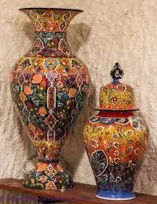 |
| Basavan Art Gallery | Bikaner | 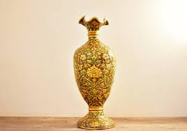 | |
| 1stDibs | Pair 19th Century French Champleve Bronze and Onyx Alhambra Vases at 1stDibs | 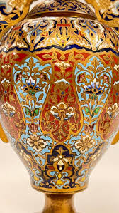 |
| LiveAuctioneers | HIGH-END ANTIQUES, FASHION, ART & More! 2025-01-25 Auction - 340 Price Results - COAUCTION in IL | 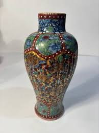 |
| Alamy | 1917 ca , NEW YORK , USA : The celebrated spanish opera Diva coloratura soprano MARIA BARRIENTOS ( 1883 - 1946 ) with italian tenore GIOVANNI MARTINELLI ( 1885 - 1969 ) | 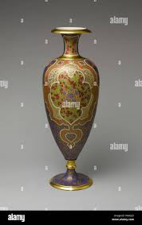 |
| Bonhams | Bonhams : Rachel Bishop for Moorcroft 'Bullers Wood' a Large Vase from a Limited Edition of 10, 2001 | 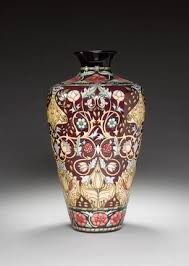 |
| eBay | Chinese Champleve Enamel Cloisonne Vase Lotus Flower Gold Leaf Gilt 5" Vintage | eBay | 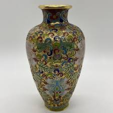 |
| Made-in-China.com | Cloisonne Pot (CH101) - Cloisonne and Cloisonne Handicrafts price | Made-in-China.com | 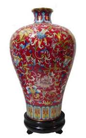 |
| 张兰中国风尚• Facebook | 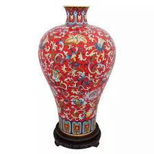 | |
| art-salon.eu | Art-Salon | 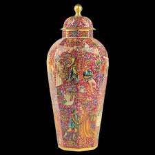 |
| Loop Decorative | Large Vase 80 - 100 cm | 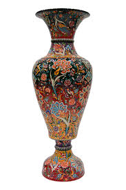 |
| Pin by Natalie Maxwell on Apartment decoration | Moser glass, Antique glass, Glass vase | 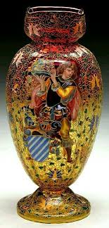 | |
| Alamy | 1917 ca. , New York , USA : The italian dancer and actress ROSINA GALLI ( born Rosina Fiorini , Venezia, 1900 ca – Madrid, 1969 ), in center in this photo | 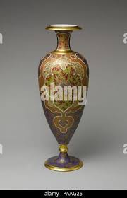 |
| eBay | Vintage Chinese Satsuma Moriage Floral Gold Gilded Ceramic Flower Vase 12" Tall | eBay | 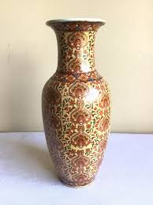 |
| Antiques Atlas | Antiques Atlas - Tall Vintage Pampas Grass Vase, Indian Enamelled as272a6484 / 18.9172 | 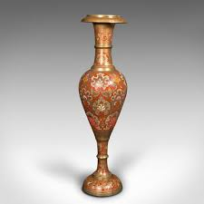 |
| eBay UK | VINTAGE ASIAN CHINESE HAND PAINTED FLOWERS ON PORCELAIN VASE SIGNED | eBay UK | 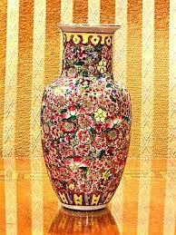 |
| The Metropolitan Museum of Art | James Callowhill - Vase - American - The Metropolitan Museum of Art | 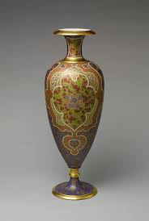 |
| Christie's | A MOORCROFT BULLERS WOOD VASE | Christie's | 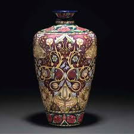 |
| eBay | Chinese Yellow Enamel Porcelain Qing Qianlong Lotus Design Vase 10.5 inch | eBay | 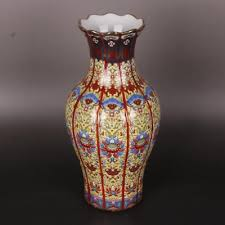 |
| LiveAuctioneers | Pair Of Large Japanese Satsuma Vases | 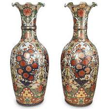 |
| Invaluable.com | Sold at Auction: Large Chinese Porcelain Floor Vase | 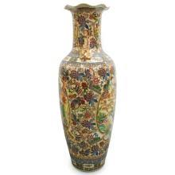 |
| Herendi Porcelán | The need to tell Something special Goldie's little girl Music manufactory The birth of a décor | 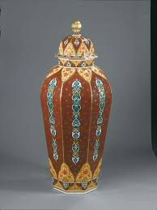 |
| eBay | Eldred's Asian Fine Art catalogs - Lot of 4 | eBay | 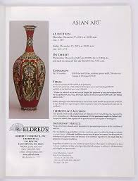 |
| 1stDibs | Moser Ewer - 5 For Sale on 1stDibs | 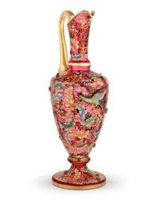 |
| DuMouchelles | CHINESE CLOISONNE VASES, PAIR, H 10", DIA 6" sold at auction on 18th September | DuMouchelles | 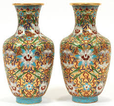 |
| Discover 90 Urn & vase and vase ideas | urn vase, antiques, satsuma vase and more | 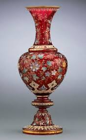 | |
| eBay | 10" Old Chinese 24K Gilt Cloisonne Inlaid Gem Flower Vase Bottle Pair | eBay | 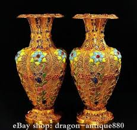 |
| Freeman's Auction | Eleven assorted Chinese export clobbered porcelain small vases 外銷瓷一組十一件 18th century ???? Lot 231 | 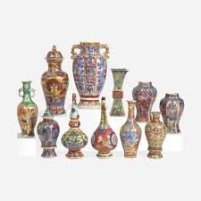 |
| DuMouchelles | Derby Manufactory (English) Porcelain Covered Ornamental Urn, Ca. 1820, H 25.75" W 16.5" Depth 13.8" sold at auction on 10th October | DuMouchelles | 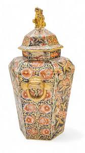 |
| 1stDibs | Tall Vintage Pampas Grass Vase, Indian Enamelled Brass, Display Urn, Midcentury at 1stDibs | 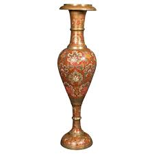 |
| Henry B. Plant Museum | Henry B. Plant Museum - Ceramics | 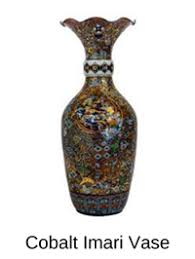 |
| Violet Oon Singapore | DRINKS | 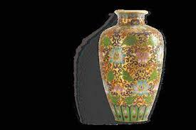 |
| Christie's Auction | A famille rose monk's cap ewer and basin, 18th Century | Christie's | |
| Dünya muzeyləri və sərgilərində bu torpaqlarda özünəməxsus şəkildə hazırlanan, xalqın mədəniyyətini tanıdan müxtəlif nümunələrə rast gəlinir. Gəlin, bu eksponatlar və ölkələr barədə məlumatları birlikdə oxuyaq In museums and exhibitions around the world, | ||
| artsncraftsindia.com | Luxurious Hand-Painted Marble Vase with 22K Gold Detailing – Indian Elephant Motif Decor | |
| mosaicartsdc.com | Custom Ceramic Vase | My Site 1 | |
| eBay | 16" Marked Old Chinese Bronze Cloisonne Dynasty Flower Bird Jar Pot Bottle Vase | eBay | |
| Ruby Lane | Fischer J Budapest Enamel Jug Pitcher, late 19th Century. For Sale at Ruby Lane | |
| iStock | Antique Chinese Cloisonne Pilgrims Flask Stock Photo - Download Image Now - Chinese Culture, Vase, Antique - iStock | |
| Multan Handicrafts | Vase Corner Lamp | Multan Handicrafts | |
| Antique Russian Silver by Faberge - Viola.bz | Antiques, Russian silver, Russian art | ||
| Concept Art Gallery | Pair Chinese cloisonne Vases sold at auction on 24th August | Concept Art Gallery |